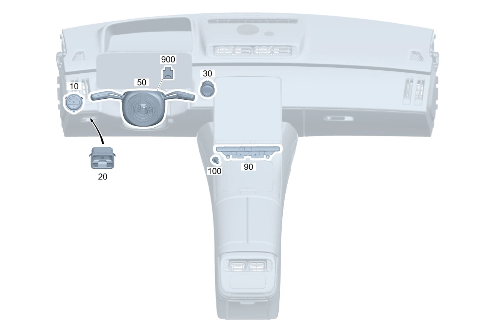

| № | Артикул | Название | Кол. | Примечание | Ограничение |
|---|---|---|---|---|---|
| 10 | A 223 905 43 03 | Переключатель света | 1 | Поворотный выключатель света / модуль освещения | |
| 10 | A 223 905 20 03 | Переключатель света (LIGHT SWITCH) | 1 | Поворотный выключатель света / модуль освещения | P14/P22/950/P29/P86/PTF |
| 20 | A 223 905 76 06 | Блок выключателей | 1 | Электрический стояночный тормоз | |
| 20 | A 223 905 77 06 | Блок выключателей (SWITCH BLOCK) | 1 | Электрический стояночный тормоз | P14/P22/950/P29/P86/PTF |
| 30 | A 223 905 80 06 | Кнопочный выключатель (BUTTON SWITCH) | 1 | Пуск / остановка двигателя | |
| 30 | A 223 905 81 06 | Кнопочный выключатель (BUTTON SWITCH) | 1 | Пуск / остановка двигателя | ME10 |
| 30 | A 223 905 79 06 | Кнопочный выключатель (BUTTON SWITCH) | 1 | Пуск / остановка двигателя | ME10+(P14/P22/950/P29/P86/PTF) |
| 30 | A 223 905 79 06 | Кнопочный выключатель (BUTTON SWITCH) | 1 | Пуск / остановка двигателя | (ME10+(P14/950/P29/P86/PTF))+0B4 |
| 50 | A 206 900 10 15 | Блок управления | 1 | Блок подрулевых переключателей; VALEO [672] ДЕТАЛЬ ПОСЛЕ УСТАН.ПРОВЕРИТЬ НА АКТУАЛЬНОСТЬ "ПРОШИВНОГО" ПО [-] Перед заказом определите производителя. Разрешается устанавливать детали только того же производителя. | |
| 50 | A 206 900 12 15 | Блок управления | 1 | Блок подрулевых переключателей; VALEO [672] ДЕТАЛЬ ПОСЛЕ УСТАН.ПРОВЕРИТЬ НА АКТУАЛЬНОСТЬ "ПРОШИВНОГО" ПО [-] Перед заказом определите производителя. Разрешается устанавливать детали только того же производителя. | 443 |
| 50 | A 206 900 22 15 | Блок управления | 1 | Блок подрулевых переключателей; BCS [672] ДЕТАЛЬ ПОСЛЕ УСТАН.ПРОВЕРИТЬ НА АКТУАЛЬНОСТЬ "ПРОШИВНОГО" ПО [-] Перед заказом определите производителя. Разрешается устанавливать детали только того же производителя. | 443 |
| 50 | A 206 900 16 15 | Блок управления | 1 | Блок подрулевых переключателей; VALEO [672] ДЕТАЛЬ ПОСЛЕ УСТАН.ПРОВЕРИТЬ НА АКТУАЛЬНОСТЬ "ПРОШИВНОГО" ПО [-] Перед заказом определите производителя. Разрешается устанавливать детали только того же производителя. | 275 |
| 50 | A 206 900 18 15 | Блок управления | 1 | Блок подрулевых переключателей; VALEO [672] ДЕТАЛЬ ПОСЛЕ УСТАН.ПРОВЕРИТЬ НА АКТУАЛЬНОСТЬ "ПРОШИВНОГО" ПО [-] Перед заказом определите производителя. Разрешается устанавливать детали только того же производителя. | 275+443 |
| 50 | A 297 900 76 08 | Блок управления (CONTROL UNIT) | 1 | Блок подрулевых переключателей; VALEO [672] ДЕТАЛЬ ПОСЛЕ УСТАН.ПРОВЕРИТЬ НА АКТУАЛЬНОСТЬ "ПРОШИВНОГО" ПО [-] Перед заказом определите производителя. Разрешается устанавливать детали только того же производителя. | 803 |
| 50 | A 297 900 25 12 | Блок управления | 1 | Блок подрулевых переключателей; VALEO [672] ДЕТАЛЬ ПОСЛЕ УСТАН.ПРОВЕРИТЬ НА АКТУАЛЬНОСТЬ "ПРОШИВНОГО" ПО [-] Перед заказом определите производителя. Разрешается устанавливать детали только того же производителя. | 803 |
| 50 | A 297 900 77 14 | Блок управления | 1 | Блок подрулевых переключателей; VALEO [672] ДЕТАЛЬ ПОСЛЕ УСТАН.ПРОВЕРИТЬ НА АКТУАЛЬНОСТЬ "ПРОШИВНОГО" ПО [-] Перед заказом определите производителя. Разрешается устанавливать детали только того же производителя. | 803 |
| 50 | A 297 900 77 14 | Блок управления | 1 | Блок подрулевых переключателей; VALEO [672] ДЕТАЛЬ ПОСЛЕ УСТАН.ПРОВЕРИТЬ НА АКТУАЛЬНОСТЬ "ПРОШИВНОГО" ПО [-] Перед заказом определите производителя. Разрешается устанавливать детали только того же производителя. | |
| 50 | A 295 900 44 00 | Блок управления | 1 | Блок подрулевых переключателей; BCS [672] ДЕТАЛЬ ПОСЛЕ УСТАН.ПРОВЕРИТЬ НА АКТУАЛЬНОСТЬ "ПРОШИВНОГО" ПО [-] Перед заказом определите производителя. Разрешается устанавливать детали только того же производителя. | 803 |
| 50 | A 295 900 80 00 | Блок управления | 1 | Блок подрулевых переключателей; BCS [672] ДЕТАЛЬ ПОСЛЕ УСТАН.ПРОВЕРИТЬ НА АКТУАЛЬНОСТЬ "ПРОШИВНОГО" ПО [-] Перед заказом определите производителя. Разрешается устанавливать детали только того же производителя. | 803 |
| 50 | A 295 900 03 01 | Блок управления (CONTROL UNIT) | 1 | Блок подрулевых переключателей; BCS [672] ДЕТАЛЬ ПОСЛЕ УСТАН.ПРОВЕРИТЬ НА АКТУАЛЬНОСТЬ "ПРОШИВНОГО" ПО [-] Перед заказом определите производителя. Разрешается устанавливать детали только того же производителя. | |
| 50 | A 297 900 78 08 | Блок управления | 1 | Блок подрулевых переключателей; VALEO [672] ДЕТАЛЬ ПОСЛЕ УСТАН.ПРОВЕРИТЬ НА АКТУАЛЬНОСТЬ "ПРОШИВНОГО" ПО [-] Перед заказом определите производителя. Разрешается устанавливать детали только того же производителя. | 803+443 |
| 50 | A 297 900 27 12 | Блок управления | 1 | Блок подрулевых переключателей [672] ДЕТАЛЬ ПОСЛЕ УСТАН.ПРОВЕРИТЬ НА АКТУАЛЬНОСТЬ "ПРОШИВНОГО" ПО [-] Перед заказом определите производителя. Разрешается устанавливать детали только того же производителя. | 803+443 |
| 50 | A 297 900 79 14 | Блок управления | 1 | Блок подрулевых переключателей; VALEO [672] ДЕТАЛЬ ПОСЛЕ УСТАН.ПРОВЕРИТЬ НА АКТУАЛЬНОСТЬ "ПРОШИВНОГО" ПО [-] Перед заказом определите производителя. Разрешается устанавливать детали только того же производителя. | 803+443 |
| 50 | A 297 900 79 14 | Блок управления | 1 | Блок подрулевых переключателей; VALEO [672] ДЕТАЛЬ ПОСЛЕ УСТАН.ПРОВЕРИТЬ НА АКТУАЛЬНОСТЬ "ПРОШИВНОГО" ПО [-] Перед заказом определите производителя. Разрешается устанавливать детали только того же производителя. | 443 |
| 50 | A 295 900 48 00 | Блок управления | 1 | Блок подрулевых переключателей; BCS [672] ДЕТАЛЬ ПОСЛЕ УСТАН.ПРОВЕРИТЬ НА АКТУАЛЬНОСТЬ "ПРОШИВНОГО" ПО [-] Перед заказом определите производителя. Разрешается устанавливать детали только того же производителя. | 803+443 |
| 50 | A 295 900 82 00 | Блок управления | 1 | Блок подрулевых переключателей; BCS [672] ДЕТАЛЬ ПОСЛЕ УСТАН.ПРОВЕРИТЬ НА АКТУАЛЬНОСТЬ "ПРОШИВНОГО" ПО [-] Перед заказом определите производителя. Разрешается устанавливать детали только того же производителя. | 803+443 |
| 50 | A 295 900 05 01 | Блок управления | 1 | Блок подрулевых переключателей; BCS [672] ДЕТАЛЬ ПОСЛЕ УСТАН.ПРОВЕРИТЬ НА АКТУАЛЬНОСТЬ "ПРОШИВНОГО" ПО [-] Перед заказом определите производителя. Разрешается устанавливать детали только того же производителя. | 443 |
| 50 | A 297 900 80 08 | Блок управления (CONTROL UNIT) | 1 | Блок подрулевых переключателей; VALEO [672] ДЕТАЛЬ ПОСЛЕ УСТАН.ПРОВЕРИТЬ НА АКТУАЛЬНОСТЬ "ПРОШИВНОГО" ПО [-] Перед заказом определите производителя. Разрешается устанавливать детали только того же производителя. | 803+275 |
| 50 | A 297 900 29 12 | Блок управления | 1 | Блок подрулевых переключателей; VALEO [672] ДЕТАЛЬ ПОСЛЕ УСТАН.ПРОВЕРИТЬ НА АКТУАЛЬНОСТЬ "ПРОШИВНОГО" ПО [-] Перед заказом определите производителя. Разрешается устанавливать детали только того же производителя. | 803+275 |
| 50 | A 297 900 81 14 | Блок управления | 1 | Блок подрулевых переключателей; VALEO [672] ДЕТАЛЬ ПОСЛЕ УСТАН.ПРОВЕРИТЬ НА АКТУАЛЬНОСТЬ "ПРОШИВНОГО" ПО [-] Перед заказом определите производителя. Разрешается устанавливать детали только того же производителя. | 803+275 |
| 50 | A 297 900 81 14 | Блок управления | 1 | Блок подрулевых переключателей; VALEO [672] ДЕТАЛЬ ПОСЛЕ УСТАН.ПРОВЕРИТЬ НА АКТУАЛЬНОСТЬ "ПРОШИВНОГО" ПО [-] Перед заказом определите производителя. Разрешается устанавливать детали только того же производителя. | 275 |
| 50 | A 295 900 47 00 | Блок управления | 1 | Блок подрулевых переключателей; BCS [672] ДЕТАЛЬ ПОСЛЕ УСТАН.ПРОВЕРИТЬ НА АКТУАЛЬНОСТЬ "ПРОШИВНОГО" ПО [-] Перед заказом определите производителя. Разрешается устанавливать детали только того же производителя. | 803+275 |
| 50 | A 295 900 84 00 | Блок управления | 1 | Блок подрулевых переключателей; BCS [672] ДЕТАЛЬ ПОСЛЕ УСТАН.ПРОВЕРИТЬ НА АКТУАЛЬНОСТЬ "ПРОШИВНОГО" ПО [-] Перед заказом определите производителя. Разрешается устанавливать детали только того же производителя. | 803+275 |
| 50 | A 295 900 07 01 | Блок управления | 1 | Блок подрулевых переключателей; BCS [672] ДЕТАЛЬ ПОСЛЕ УСТАН.ПРОВЕРИТЬ НА АКТУАЛЬНОСТЬ "ПРОШИВНОГО" ПО [-] Перед заказом определите производителя. Разрешается устанавливать детали только того же производителя. | 275 |
| 50 | A 297 900 82 08 | Блок управления (CONTROL UNIT) | 1 | Блок подрулевых переключателей; VALEO [672] ДЕТАЛЬ ПОСЛЕ УСТАН.ПРОВЕРИТЬ НА АКТУАЛЬНОСТЬ "ПРОШИВНОГО" ПО [-] Перед заказом определите производителя. Разрешается устанавливать детали только того же производителя. | 803+275+443 |
| 50 | A 297 900 31 12 | Блок управления | 1 | Блок подрулевых переключателей; VALEO [672] ДЕТАЛЬ ПОСЛЕ УСТАН.ПРОВЕРИТЬ НА АКТУАЛЬНОСТЬ "ПРОШИВНОГО" ПО [-] Перед заказом определите производителя. Разрешается устанавливать детали только того же производителя. | 803+275+443 |
| 50 | A 297 900 83 14 | Блок управления | 1 | Блок подрулевых переключателей; VALEO [672] ДЕТАЛЬ ПОСЛЕ УСТАН.ПРОВЕРИТЬ НА АКТУАЛЬНОСТЬ "ПРОШИВНОГО" ПО [-] Перед заказом определите производителя. Разрешается устанавливать детали только того же производителя. | 803+275+443 |
| 50 | A 297 900 83 14 | Блок управления | 1 | Блок подрулевых переключателей; VALEO [672] ДЕТАЛЬ ПОСЛЕ УСТАН.ПРОВЕРИТЬ НА АКТУАЛЬНОСТЬ "ПРОШИВНОГО" ПО [-] Перед заказом определите производителя. Разрешается устанавливать детали только того же производителя. | 275+443 |
| 50 | A 295 900 50 00 | Блок управления | 1 | Блок подрулевых переключателей; BCS [672] ДЕТАЛЬ ПОСЛЕ УСТАН.ПРОВЕРИТЬ НА АКТУАЛЬНОСТЬ "ПРОШИВНОГО" ПО [-] Перед заказом определите производителя. Разрешается устанавливать детали только того же производителя. | 803+275+443 |
| 50 | A 295 900 86 00 | Блок управления | 1 | Блок подрулевых переключателей; BCS [672] ДЕТАЛЬ ПОСЛЕ УСТАН.ПРОВЕРИТЬ НА АКТУАЛЬНОСТЬ "ПРОШИВНОГО" ПО [-] Перед заказом определите производителя. Разрешается устанавливать детали только того же производителя. | 803+275+443 |
| 50 | A 295 900 09 01 | Блок управления | 1 | Блок подрулевых переключателей; BCS [672] ДЕТАЛЬ ПОСЛЕ УСТАН.ПРОВЕРИТЬ НА АКТУАЛЬНОСТЬ "ПРОШИВНОГО" ПО [-] Перед заказом определите производителя. Разрешается устанавливать детали только того же производителя. | 275+443 |
| 50 | A 297 900 58 16 | Блок управления (CONTROL UNIT) | 1 | Блок подрулевых переключателей; VALEO [672] ДЕТАЛЬ ПОСЛЕ УСТАН.ПРОВЕРИТЬ НА АКТУАЛЬНОСТЬ "ПРОШИВНОГО" ПО [-] Перед заказом определите производителя. Разрешается устанавливать детали только того же производителя. | 803+053 |
| 50 | A 297 900 58 16 | Блок управления (CONTROL UNIT) | 1 | Блок подрулевых переключателей; VALEO [672] ДЕТАЛЬ ПОСЛЕ УСТАН.ПРОВЕРИТЬ НА АКТУАЛЬНОСТЬ "ПРОШИВНОГО" ПО [-] Перед заказом определите производителя. Разрешается устанавливать детали только того же производителя. | |
| 50 | A 295 900 03 01 | Блок управления (CONTROL UNIT) | 1 | Блок подрулевых переключателей; BCS [672] ДЕТАЛЬ ПОСЛЕ УСТАН.ПРОВЕРИТЬ НА АКТУАЛЬНОСТЬ "ПРОШИВНОГО" ПО [-] Перед заказом определите производителя. Разрешается устанавливать детали только того же производителя. | 803+053 |
| 50 | A 295 900 03 01 | Блок управления (CONTROL UNIT) | 1 | Блок подрулевых переключателей; BCS [672] ДЕТАЛЬ ПОСЛЕ УСТАН.ПРОВЕРИТЬ НА АКТУАЛЬНОСТЬ "ПРОШИВНОГО" ПО [-] Перед заказом определите производителя. Разрешается устанавливать детали только того же производителя. | |
| 50 | A 297 900 59 16 | Блок управления | 1 | Блок подрулевых переключателей; VALEO [672] ДЕТАЛЬ ПОСЛЕ УСТАН.ПРОВЕРИТЬ НА АКТУАЛЬНОСТЬ "ПРОШИВНОГО" ПО [-] Перед заказом определите производителя. Разрешается устанавливать детали только того же производителя. | 803+053+443 |
| 50 | A 297 900 59 16 | Блок управления | 1 | Блок подрулевых переключателей; VALEO [672] ДЕТАЛЬ ПОСЛЕ УСТАН.ПРОВЕРИТЬ НА АКТУАЛЬНОСТЬ "ПРОШИВНОГО" ПО [-] Перед заказом определите производителя. Разрешается устанавливать детали только того же производителя. | 443 |
| 50 | A 295 900 05 01 | Блок управления | 1 | Блок подрулевых переключателей; BCS [672] ДЕТАЛЬ ПОСЛЕ УСТАН.ПРОВЕРИТЬ НА АКТУАЛЬНОСТЬ "ПРОШИВНОГО" ПО [-] Перед заказом определите производителя. Разрешается устанавливать детали только того же производителя. | 803+053+443 |
| 50 | A 295 900 05 01 | Блок управления | 1 | Блок подрулевых переключателей; BCS [672] ДЕТАЛЬ ПОСЛЕ УСТАН.ПРОВЕРИТЬ НА АКТУАЛЬНОСТЬ "ПРОШИВНОГО" ПО [-] Перед заказом определите производителя. Разрешается устанавливать детали только того же производителя. | 443 |
| 50 | A 297 900 61 16 | Блок управления (CONTROL UNIT) | 1 | Блок подрулевых переключателей; VALEO [672] ДЕТАЛЬ ПОСЛЕ УСТАН.ПРОВЕРИТЬ НА АКТУАЛЬНОСТЬ "ПРОШИВНОГО" ПО [-] Перед заказом определите производителя. Разрешается устанавливать детали только того же производителя. | 803+053+275 |
| 50 | A 297 900 61 16 | Блок управления (CONTROL UNIT) | 1 | Блок подрулевых переключателей; VALEO [672] ДЕТАЛЬ ПОСЛЕ УСТАН.ПРОВЕРИТЬ НА АКТУАЛЬНОСТЬ "ПРОШИВНОГО" ПО [-] Перед заказом определите производителя. Разрешается устанавливать детали только того же производителя. | 275 |
| 50 | A 295 900 07 01 | Блок управления | 1 | Блок подрулевых переключателей; BCS [672] ДЕТАЛЬ ПОСЛЕ УСТАН.ПРОВЕРИТЬ НА АКТУАЛЬНОСТЬ "ПРОШИВНОГО" ПО [-] Перед заказом определите производителя. Разрешается устанавливать детали только того же производителя. | 803+053+275 |
| 50 | A 295 900 07 01 | Блок управления | 1 | Блок подрулевых переключателей; BCS [672] ДЕТАЛЬ ПОСЛЕ УСТАН.ПРОВЕРИТЬ НА АКТУАЛЬНОСТЬ "ПРОШИВНОГО" ПО [-] Перед заказом определите производителя. Разрешается устанавливать детали только того же производителя. | 275 |
| 50 | A 297 900 63 16 | Блок управления | 1 | Блок подрулевых переключателей; VALEO [672] ДЕТАЛЬ ПОСЛЕ УСТАН.ПРОВЕРИТЬ НА АКТУАЛЬНОСТЬ "ПРОШИВНОГО" ПО [-] Перед заказом определите производителя. Разрешается устанавливать детали только того же производителя. | 803+053+275+443 |
| 50 | A 297 900 63 16 | Блок управления | 1 | Блок подрулевых переключателей; VALEO [672] ДЕТАЛЬ ПОСЛЕ УСТАН.ПРОВЕРИТЬ НА АКТУАЛЬНОСТЬ "ПРОШИВНОГО" ПО [-] Перед заказом определите производителя. Разрешается устанавливать детали только того же производителя. | 275+443 |
| 50 | A 295 900 09 01 | Блок управления | 1 | Блок подрулевых переключателей; BCS [672] ДЕТАЛЬ ПОСЛЕ УСТАН.ПРОВЕРИТЬ НА АКТУАЛЬНОСТЬ "ПРОШИВНОГО" ПО [-] Перед заказом определите производителя. Разрешается устанавливать детали только того же производителя. | 803+053+275+443 |
| 50 | A 295 900 09 01 | Блок управления | 1 | Блок подрулевых переключателей; BCS [672] ДЕТАЛЬ ПОСЛЕ УСТАН.ПРОВЕРИТЬ НА АКТУАЛЬНОСТЬ "ПРОШИВНОГО" ПО [-] Перед заказом определите производителя. Разрешается устанавливать детали только того же производителя. | 275+443 |
| 50 | A 297 900 76 17 | Блок управления | 1 | Блок подрулевых переключателей; VALEO [672] ДЕТАЛЬ ПОСЛЕ УСТАН.ПРОВЕРИТЬ НА АКТУАЛЬНОСТЬ "ПРОШИВНОГО" ПО [-] Перед заказом определите производителя. Разрешается устанавливать детали только того же производителя. | 804 |
| 50 | A 297 900 76 17 | Блок управления | 1 | Блок подрулевых переключателей; VALEO [672] ДЕТАЛЬ ПОСЛЕ УСТАН.ПРОВЕРИТЬ НА АКТУАЛЬНОСТЬ "ПРОШИВНОГО" ПО [-] Перед заказом определите производителя. Разрешается устанавливать детали только того же производителя. | 804/804+054 |
| 50 | A 297 900 76 17 | Блок управления | 1 | Блок подрулевых переключателей; VALEO [672] ДЕТАЛЬ ПОСЛЕ УСТАН.ПРОВЕРИТЬ НА АКТУАЛЬНОСТЬ "ПРОШИВНОГО" ПО [-] Перед заказом определите производителя. Разрешается устанавливать детали только того же производителя. | |
| 50 | A 295 900 22 01 | Блок управления | 1 | Блок подрулевых переключателей; BCS [672] ДЕТАЛЬ ПОСЛЕ УСТАН.ПРОВЕРИТЬ НА АКТУАЛЬНОСТЬ "ПРОШИВНОГО" ПО [-] Перед заказом определите производителя. Разрешается устанавливать детали только того же производителя. | 804 |
| 50 | A 295 900 22 01 | Блок управления | 1 | Блок подрулевых переключателей; BCS [672] ДЕТАЛЬ ПОСЛЕ УСТАН.ПРОВЕРИТЬ НА АКТУАЛЬНОСТЬ "ПРОШИВНОГО" ПО [-] Перед заказом определите производителя. Разрешается устанавливать детали только того же производителя. | 804/804+054 |
| 50 | A 297 900 78 17 | Блок управления | 1 | Блок подрулевых переключателей; VALEO [672] ДЕТАЛЬ ПОСЛЕ УСТАН.ПРОВЕРИТЬ НА АКТУАЛЬНОСТЬ "ПРОШИВНОГО" ПО [-] Перед заказом определите производителя. Разрешается устанавливать детали только того же производителя. | 804+443 |
| 50 | A 297 900 78 17 | Блок управления | 1 | Блок подрулевых переключателей; VALEO [672] ДЕТАЛЬ ПОСЛЕ УСТАН.ПРОВЕРИТЬ НА АКТУАЛЬНОСТЬ "ПРОШИВНОГО" ПО [-] Перед заказом определите производителя. Разрешается устанавливать детали только того же производителя. | (804/804+054)+443 |
| 50 | A 297 900 78 17 | Блок управления | 1 | Блок подрулевых переключателей; VALEO [672] ДЕТАЛЬ ПОСЛЕ УСТАН.ПРОВЕРИТЬ НА АКТУАЛЬНОСТЬ "ПРОШИВНОГО" ПО [-] Перед заказом определите производителя. Разрешается устанавливать детали только того же производителя. | 443 |
| 50 | A 295 900 24 01 | Блок управления | 1 | Блок подрулевых переключателей; BCS [672] ДЕТАЛЬ ПОСЛЕ УСТАН.ПРОВЕРИТЬ НА АКТУАЛЬНОСТЬ "ПРОШИВНОГО" ПО [-] Перед заказом определите производителя. Разрешается устанавливать детали только того же производителя. | 804+443 |
| 50 | A 295 900 24 01 | Блок управления | 1 | Блок подрулевых переключателей; BCS [672] ДЕТАЛЬ ПОСЛЕ УСТАН.ПРОВЕРИТЬ НА АКТУАЛЬНОСТЬ "ПРОШИВНОГО" ПО [-] Перед заказом определите производителя. Разрешается устанавливать детали только того же производителя. | (804/804+054)+443 |
| 50 | A 297 900 80 17 | Блок управления | 1 | Блок подрулевых переключателей; VALEO [672] ДЕТАЛЬ ПОСЛЕ УСТАН.ПРОВЕРИТЬ НА АКТУАЛЬНОСТЬ "ПРОШИВНОГО" ПО [-] Перед заказом определите производителя. Разрешается устанавливать детали только того же производителя. | 804+275 |
| 50 | A 297 900 80 17 | Блок управления | 1 | Блок подрулевых переключателей; VALEO [672] ДЕТАЛЬ ПОСЛЕ УСТАН.ПРОВЕРИТЬ НА АКТУАЛЬНОСТЬ "ПРОШИВНОГО" ПО [-] Перед заказом определите производителя. Разрешается устанавливать детали только того же производителя. | (804/804+054)+275 |
| 50 | A 297 900 80 17 | Блок управления | 1 | Блок подрулевых переключателей; VALEO [672] ДЕТАЛЬ ПОСЛЕ УСТАН.ПРОВЕРИТЬ НА АКТУАЛЬНОСТЬ "ПРОШИВНОГО" ПО [-] Перед заказом определите производителя. Разрешается устанавливать детали только того же производителя. | 275 |
| 50 | A 295 900 26 01 | Блок управления (CONTROL UNIT) | 1 | Блок подрулевых переключателей; BCS [672] ДЕТАЛЬ ПОСЛЕ УСТАН.ПРОВЕРИТЬ НА АКТУАЛЬНОСТЬ "ПРОШИВНОГО" ПО [-] Перед заказом определите производителя. Разрешается устанавливать детали только того же производителя. | 804+275 |
| 50 | A 295 900 26 01 | Блок управления (CONTROL UNIT) | 1 | Блок подрулевых переключателей; BCS [672] ДЕТАЛЬ ПОСЛЕ УСТАН.ПРОВЕРИТЬ НА АКТУАЛЬНОСТЬ "ПРОШИВНОГО" ПО [-] Перед заказом определите производителя. Разрешается устанавливать детали только того же производителя. | (804/804+054)+275 |
| 50 | A 297 900 82 17 | Блок управления | 1 | Блок подрулевых переключателей; VALEO [672] ДЕТАЛЬ ПОСЛЕ УСТАН.ПРОВЕРИТЬ НА АКТУАЛЬНОСТЬ "ПРОШИВНОГО" ПО [-] Перед заказом определите производителя. Разрешается устанавливать детали только того же производителя. | 804+275+443 |
| 50 | A 297 900 82 17 | Блок управления | 1 | Блок подрулевых переключателей; VALEO [672] ДЕТАЛЬ ПОСЛЕ УСТАН.ПРОВЕРИТЬ НА АКТУАЛЬНОСТЬ "ПРОШИВНОГО" ПО [-] Перед заказом определите производителя. Разрешается устанавливать детали только того же производителя. | (804/804+054)+275+443 |
| 50 | A 297 900 82 17 | Блок управления | 1 | Блок подрулевых переключателей; VALEO [672] ДЕТАЛЬ ПОСЛЕ УСТАН.ПРОВЕРИТЬ НА АКТУАЛЬНОСТЬ "ПРОШИВНОГО" ПО [-] Перед заказом определите производителя. Разрешается устанавливать детали только того же производителя. | 275+443 |
| 50 | A 295 900 28 01 | Блок управления | 1 | Блок подрулевых переключателей; BCS [672] ДЕТАЛЬ ПОСЛЕ УСТАН.ПРОВЕРИТЬ НА АКТУАЛЬНОСТЬ "ПРОШИВНОГО" ПО [-] Перед заказом определите производителя. Разрешается устанавливать детали только того же производителя. | 804+275+443 |
| 50 | A 295 900 28 01 | Блок управления | 1 | Блок подрулевых переключателей; BCS [672] ДЕТАЛЬ ПОСЛЕ УСТАН.ПРОВЕРИТЬ НА АКТУАЛЬНОСТЬ "ПРОШИВНОГО" ПО [-] Перед заказом определите производителя. Разрешается устанавливать детали только того же производителя. | (804/804+054)+275+443 |
| 50 | A 297 900 59 21 | Блок управления | 1 | Блок подрулевых переключателей; VALEO [672] ДЕТАЛЬ ПОСЛЕ УСТАН.ПРОВЕРИТЬ НА АКТУАЛЬНОСТЬ "ПРОШИВНОГО" ПО [-] Перед заказом определите производителя. Разрешается устанавливать детали только того же производителя. | 805/806 |
| 50 | A 297 900 59 21 | Блок управления | 1 | Блок подрулевых переключателей; VALEO [672] ДЕТАЛЬ ПОСЛЕ УСТАН.ПРОВЕРИТЬ НА АКТУАЛЬНОСТЬ "ПРОШИВНОГО" ПО [-] Перед заказом определите производителя. Разрешается устанавливать детали только того же производителя. | |
| 50 | A 295 900 51 01 | Блок управления | 1 | Блок подрулевых переключателей; BCS [672] ДЕТАЛЬ ПОСЛЕ УСТАН.ПРОВЕРИТЬ НА АКТУАЛЬНОСТЬ "ПРОШИВНОГО" ПО [-] Перед заказом определите производителя. Разрешается устанавливать детали только того же производителя. | 805/806 |
| 50 | A 295 900 51 01 | Блок управления | 1 | Блок подрулевых переключателей; BCS [672] ДЕТАЛЬ ПОСЛЕ УСТАН.ПРОВЕРИТЬ НА АКТУАЛЬНОСТЬ "ПРОШИВНОГО" ПО [-] Перед заказом определите производителя. Разрешается устанавливать детали только того же производителя. | |
| 50 | A 297 900 61 21 | Блок управления | 1 | Блок подрулевых переключателей; VALEO [672] ДЕТАЛЬ ПОСЛЕ УСТАН.ПРОВЕРИТЬ НА АКТУАЛЬНОСТЬ "ПРОШИВНОГО" ПО [-] Перед заказом определите производителя. Разрешается устанавливать детали только того же производителя. | (805/806)+443 |
| 50 | A 297 900 61 21 | Блок управления | 1 | Блок подрулевых переключателей; VALEO [672] ДЕТАЛЬ ПОСЛЕ УСТАН.ПРОВЕРИТЬ НА АКТУАЛЬНОСТЬ "ПРОШИВНОГО" ПО [-] Перед заказом определите производителя. Разрешается устанавливать детали только того же производителя. | 443 |
| 50 | A 295 900 53 01 | Блок управления | 1 | Блок подрулевых переключателей; BCS [672] ДЕТАЛЬ ПОСЛЕ УСТАН.ПРОВЕРИТЬ НА АКТУАЛЬНОСТЬ "ПРОШИВНОГО" ПО [-] Перед заказом определите производителя. Разрешается устанавливать детали только того же производителя. | (805/806)+443 |
| 50 | A 295 900 53 01 | Блок управления | 1 | Блок подрулевых переключателей; BCS [672] ДЕТАЛЬ ПОСЛЕ УСТАН.ПРОВЕРИТЬ НА АКТУАЛЬНОСТЬ "ПРОШИВНОГО" ПО [-] Перед заказом определите производителя. Разрешается устанавливать детали только того же производителя. | 443 |
| 50 | A 297 900 63 21 | Блок управления | 1 | Блок подрулевых переключателей; VALEO [672] ДЕТАЛЬ ПОСЛЕ УСТАН.ПРОВЕРИТЬ НА АКТУАЛЬНОСТЬ "ПРОШИВНОГО" ПО [-] Перед заказом определите производителя. Разрешается устанавливать детали только того же производителя. | (805/806)+275 |
| 50 | A 297 900 63 21 | Блок управления | 1 | Блок подрулевых переключателей; VALEO [672] ДЕТАЛЬ ПОСЛЕ УСТАН.ПРОВЕРИТЬ НА АКТУАЛЬНОСТЬ "ПРОШИВНОГО" ПО [-] Перед заказом определите производителя. Разрешается устанавливать детали только того же производителя. | 275 |
| 50 | A 295 900 55 01 | Блок управления | 1 | Блок подрулевых переключателей; BCS [672] ДЕТАЛЬ ПОСЛЕ УСТАН.ПРОВЕРИТЬ НА АКТУАЛЬНОСТЬ "ПРОШИВНОГО" ПО [-] Перед заказом определите производителя. Разрешается устанавливать детали только того же производителя. | (805/806)+275 |
| 50 | A 295 900 55 01 | Блок управления | 1 | Блок подрулевых переключателей; BCS [672] ДЕТАЛЬ ПОСЛЕ УСТАН.ПРОВЕРИТЬ НА АКТУАЛЬНОСТЬ "ПРОШИВНОГО" ПО [-] Перед заказом определите производителя. Разрешается устанавливать детали только того же производителя. | 275 |
| 50 | A 297 900 65 21 | Блок управления | 1 | Блок подрулевых переключателей; VALEO [672] ДЕТАЛЬ ПОСЛЕ УСТАН.ПРОВЕРИТЬ НА АКТУАЛЬНОСТЬ "ПРОШИВНОГО" ПО [-] Перед заказом определите производителя. Разрешается устанавливать детали только того же производителя. | (805/806)+275+443 |
| 50 | A 297 900 65 21 | Блок управления | 1 | Блок подрулевых переключателей; VALEO [672] ДЕТАЛЬ ПОСЛЕ УСТАН.ПРОВЕРИТЬ НА АКТУАЛЬНОСТЬ "ПРОШИВНОГО" ПО [-] Перед заказом определите производителя. Разрешается устанавливать детали только того же производителя. | 275+443 |
| 50 | A 295 900 57 01 | Блок управления | 1 | Блок подрулевых переключателей; BCS [672] ДЕТАЛЬ ПОСЛЕ УСТАН.ПРОВЕРИТЬ НА АКТУАЛЬНОСТЬ "ПРОШИВНОГО" ПО [-] Перед заказом определите производителя. Разрешается устанавливать детали только того же производителя. | (805/806)+275+443 |
| 50 | A 295 900 57 01 | Блок управления | 1 | Блок подрулевых переключателей; BCS [672] ДЕТАЛЬ ПОСЛЕ УСТАН.ПРОВЕРИТЬ НА АКТУАЛЬНОСТЬ "ПРОШИВНОГО" ПО [-] Перед заказом определите производителя. Разрешается устанавливать детали только того же производителя. | 275+443 |
| 50 | A 297 900 80 25 | Блок управления | 1 | Блок подрулевых переключателей; VALEO [672] ДЕТАЛЬ ПОСЛЕ УСТАН.ПРОВЕРИТЬ НА АКТУАЛЬНОСТЬ "ПРОШИВНОГО" ПО [-] Перед заказом определите производителя. Разрешается устанавливать детали только того же производителя. | (805+055/806) |
| 50 | A 297 900 80 25 | Блок управления | 1 | Блок подрулевых переключателей; VALEO [672] ДЕТАЛЬ ПОСЛЕ УСТАН.ПРОВЕРИТЬ НА АКТУАЛЬНОСТЬ "ПРОШИВНОГО" ПО [-] Перед заказом определите производителя. Разрешается устанавливать детали только того же производителя. | |
| 50 | A 297 900 66 29 | Блок управления | 1 | Блок подрулевых переключателей; VALEO [672] ДЕТАЛЬ ПОСЛЕ УСТАН.ПРОВЕРИТЬ НА АКТУАЛЬНОСТЬ "ПРОШИВНОГО" ПО [-] Перед заказом определите производителя. Разрешается устанавливать детали только того же производителя. | |
| 50 | A 297 900 82 25 | Блок управления | 1 | Блок подрулевых переключателей; VALEO [672] ДЕТАЛЬ ПОСЛЕ УСТАН.ПРОВЕРИТЬ НА АКТУАЛЬНОСТЬ "ПРОШИВНОГО" ПО [-] Перед заказом определите производителя. Разрешается устанавливать детали только того же производителя. | 443+(805+055/806) |
| 50 | A 297 900 82 25 | Блок управления | 1 | Блок подрулевых переключателей; VALEO [672] ДЕТАЛЬ ПОСЛЕ УСТАН.ПРОВЕРИТЬ НА АКТУАЛЬНОСТЬ "ПРОШИВНОГО" ПО [-] Перед заказом определите производителя. Разрешается устанавливать детали только того же производителя. | 443 |
| 50 | A 297 900 68 29 | Блок управления | 1 | Блок подрулевых переключателей; VALEO [672] ДЕТАЛЬ ПОСЛЕ УСТАН.ПРОВЕРИТЬ НА АКТУАЛЬНОСТЬ "ПРОШИВНОГО" ПО [-] Перед заказом определите производителя. Разрешается устанавливать детали только того же производителя. | 443 |
| 50 | A 297 900 84 25 | Блок управления | 1 | Блок подрулевых переключателей; VALEO [672] ДЕТАЛЬ ПОСЛЕ УСТАН.ПРОВЕРИТЬ НА АКТУАЛЬНОСТЬ "ПРОШИВНОГО" ПО [-] Перед заказом определите производителя. Разрешается устанавливать детали только того же производителя. | 275+(805+055/806) |
| 50 | A 297 900 84 25 | Блок управления | 1 | Блок подрулевых переключателей; VALEO [672] ДЕТАЛЬ ПОСЛЕ УСТАН.ПРОВЕРИТЬ НА АКТУАЛЬНОСТЬ "ПРОШИВНОГО" ПО [-] Перед заказом определите производителя. Разрешается устанавливать детали только того же производителя. | 275 |
| 50 | A 297 900 70 29 | Блок управления | 1 | Блок подрулевых переключателей; VALEO [672] ДЕТАЛЬ ПОСЛЕ УСТАН.ПРОВЕРИТЬ НА АКТУАЛЬНОСТЬ "ПРОШИВНОГО" ПО [-] Перед заказом определите производителя. Разрешается устанавливать детали только того же производителя. | 275 |
| 50 | A 297 900 86 25 | Блок управления | 1 | Блок подрулевых переключателей; VALEO [672] ДЕТАЛЬ ПОСЛЕ УСТАН.ПРОВЕРИТЬ НА АКТУАЛЬНОСТЬ "ПРОШИВНОГО" ПО [-] Перед заказом определите производителя. Разрешается устанавливать детали только того же производителя. | 275+443+(805+055/806) |
| 50 | A 297 900 86 25 | Блок управления | 1 | Блок подрулевых переключателей; VALEO [672] ДЕТАЛЬ ПОСЛЕ УСТАН.ПРОВЕРИТЬ НА АКТУАЛЬНОСТЬ "ПРОШИВНОГО" ПО [-] Перед заказом определите производителя. Разрешается устанавливать детали только того же производителя. | 275+443 |
| 50 | A 297 900 72 29 | Блок управления | 1 | Блок подрулевых переключателей; VALEO [672] ДЕТАЛЬ ПОСЛЕ УСТАН.ПРОВЕРИТЬ НА АКТУАЛЬНОСТЬ "ПРОШИВНОГО" ПО [-] Перед заказом определите производителя. Разрешается устанавливать детали только того же производителя. | 275+443 |
| 50 | A 206 900 44 25 | Блок управления | 1 | Блок подрулевых переключателей; KOSTAL [672] ДЕТАЛЬ ПОСЛЕ УСТАН.ПРОВЕРИТЬ НА АКТУАЛЬНОСТЬ "ПРОШИВНОГО" ПО | 807/808/29X |
| 50 | A 167 900 76 38 | Блок управления | 1 | Блок подрулевых переключателей; KOSTAL [672] ДЕТАЛЬ ПОСЛЕ УСТАН.ПРОВЕРИТЬ НА АКТУАЛЬНОСТЬ "ПРОШИВНОГО" ПО | (807/808/29X)+275 |
| 90 | A 206 900 32 14 | Блок управления (CONTROL UNIT) | 1 | Верхняя блок\-панель управления [672] ДЕТАЛЬ ПОСЛЕ УСТАН.ПРОВЕРИТЬ НА АКТУАЛЬНОСТЬ "ПРОШИВНОГО" ПО | ME10 |
| 90 | A 206 900 54 16 | Блок управления (CONTROL UNIT) | 1 | Верхняя блок\-панель управления [672] ДЕТАЛЬ ПОСЛЕ УСТАН.ПРОВЕРИТЬ НА АКТУАЛЬНОСТЬ "ПРОШИВНОГО" ПО | ME10 |
| 90 | A 206 900 33 14 | Блок управления (CONTROL UNIT) | 1 | Верхняя блок\-панель управления [672] ДЕТАЛЬ ПОСЛЕ УСТАН.ПРОВЕРИТЬ НА АКТУАЛЬНОСТЬ "ПРОШИВНОГО" ПО | ME10+321 |
| 90 | A 206 900 55 16 | Блок управления (CONTROL UNIT) | 1 | Верхняя блок\-панель управления [672] ДЕТАЛЬ ПОСЛЕ УСТАН.ПРОВЕРИТЬ НА АКТУАЛЬНОСТЬ "ПРОШИВНОГО" ПО | ME10+321 |
| 90 | A 206 900 30 14 | Блок управления | 1 | Верхняя блок\-панель управления [672] ДЕТАЛЬ ПОСЛЕ УСТАН.ПРОВЕРИТЬ НА АКТУАЛЬНОСТЬ "ПРОШИВНОГО" ПО | ME10+235 |
| 90 | A 206 900 52 16 | Блок управления (CONTROL UNIT) | 1 | Верхняя блок\-панель управления [672] ДЕТАЛЬ ПОСЛЕ УСТАН.ПРОВЕРИТЬ НА АКТУАЛЬНОСТЬ "ПРОШИВНОГО" ПО | ME10+235 |
| 90 | A 206 900 31 14 | Блок управления (CONTROL UNIT) | 1 | Верхняя блок\-панель управления [672] ДЕТАЛЬ ПОСЛЕ УСТАН.ПРОВЕРИТЬ НА АКТУАЛЬНОСТЬ "ПРОШИВНОГО" ПО | ME10+235+321 |
| 90 | A 206 900 53 16 | Блок управления (CONTROL UNIT) | 1 | Верхняя блок\-панель управления [672] ДЕТАЛЬ ПОСЛЕ УСТАН.ПРОВЕРИТЬ НА АКТУАЛЬНОСТЬ "ПРОШИВНОГО" ПО | ME10+235+321 |
| 90 | A 206 900 21 25 | Блок управления (CONTROL UNIT) | 1 | Верхняя блок\-панель управления [672] ДЕТАЛЬ ПОСЛЕ УСТАН.ПРОВЕРИТЬ НА АКТУАЛЬНОСТЬ "ПРОШИВНОГО" ПО | (807/808)+ME10+(K69/K70) |
| 100 | N 000000 008339 | FILLISTER HD SCREW (FILLISTER HEAD SCREW) | 2 | Болт блока управления верхней блок\-панели управления; 4X12 | |
| 900 | A 204 545 04 26 | Корпус штекерной втулки (RECEPTACLE HOUSING) | 1 | Блок подрулевых переключателей 14\-PIN MLK1.2S; 14\-PIN MLK1.2S | |
| 900 | A 001 545 93 73 | Блокировка (LOCK) | 1 | Пломбировка TO A 204 545 04 26 | |
| 900 | A 000 823 02 45 | Блокировка (LOCK) | 1 | Оранжевый цвет |
Позиций: 120 · подписано на схемах: 120 · колесо — плавный зум в курсор, перетаскивание — пан, двойной клик — зум, клик по артикулу — скопировать · наведите на строку или цифру на схеме — подсветка связки, клик — закрепить.